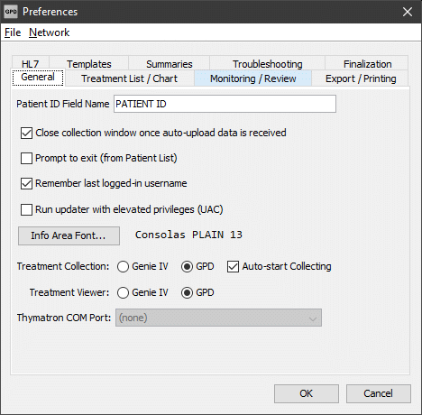

Preferences
The Preferences screen is found in the File menu of the Login, Patients, and Treatments windows. The various options are grouped into categories, each in a separate tab:

- General
- Options that affect the overall behavior of the program, including the font used for the Patient and Treatment information text areas.
- Treatment List / Chart
- To configure the appearance and behavior of the Treatments List window and Chart.
- Monitoring/Review
- Allows you to set the minimum and maximum values for the horizontal scale of the Monitoring/Collection and Graph Review screens.
- Export / Printing
- These options allow you to customize the appearance and content of PDF reports.
- HL7
- Network and template options that control how GPD generates and processes HL7 messages.
- Templates
- Edit the Patient, Treatment, and Patient Summary templates, and configure the behavior of automatic template field insertion.
- Summaries
- Options to modify the treatment summary sent by the Thymatron before it's stored in GPD.
- Troubleshooting
- Here you can enable additional logging to aid in debugging program bugs, and open the folder where GPD log files are kept.
- Finalization
- Options related to the finalization of treatments and patients